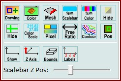
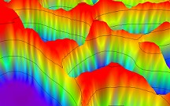

|
图像查看器杂项视觉
|
您可以使用图像查看器环形菜单打开这些功能。

绘图：
打开变换绘图选项。在这里您可以更改来自其他图像/数据对象的变换的线条绘制。
颜色：
更改背景颜色
网格：
在3D模式下显示美观的网格边框。边缘像素被降低以在边界处闭合网格。
比例尺：
显示或隐藏比例尺。
颜色：
更改比例尺颜色。
隐藏（掩模）：
临时隐藏掩模（例如用户使用绘图工具绘制的掩模或从对话框计算出的掩模）。
-
隐藏（十字线）：
显示或隐藏绿色光标十字线（导出图像时很有用）。
颜色标尺：
在所有图像查看器上以叠加文本形式显示当前颜色标尺的顶部和底部值。
像素：
打开或关闭像素颜色插值（例如，如果您想看到像素边界）。
自由比例：
打开或关闭自由比例模式。如果开启，图像将适应查看器窗口大小，而不保持原始比例。
等高线：
打开或关闭等高线绘制。会显示一个对话框来更改等高线的数量和值。
在2D模式下，等高线使用彩色图像的浮点值计算；
在3D模式下，等高线使用3D-Z图像的浮点值计算。

位置：
将当前显示图像的位置发送到所有其他查看器，以便在其他查看器中查看此图像的区域。
-
显示：
显示或隐藏坐标系轴。
Z轴：
如果坐标系轴已显示，则显示或隐藏Z轴。
边界框：
如果坐标系轴已显示，则显示或隐藏边界框。
标签：
如果坐标系轴已显示，则显示或隐藏刻度标签和轴标题。
-
比例尺Z位置：
在3D显示模式下更改比例尺和其他标签的Z位置。